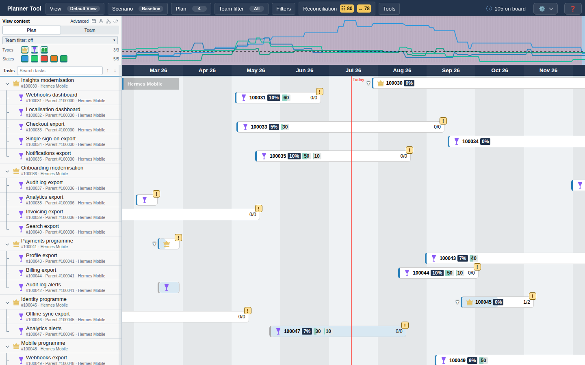
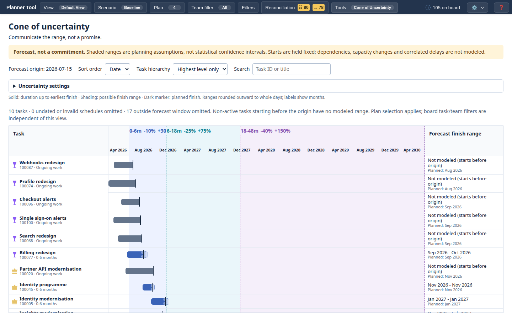

A clearer view of work and uncertainty
PlannerTool v6.0.0
Follow a task's hierarchy on the timeline, explore a team's work across plans, and talk about delivery ranges without presenting them as promises.
This release reshapes the planning board and adds a new forecast view. Administrators can also choose Microsoft Entra sign-in and delegated Azure DevOps access for connected installations.
For planners
More context, less navigation
A resizable task list now stays aligned with the timeline. Search by title or ID, follow indentation and branch lines, and reveal a parent or children directly beside the task. The new View context overview keeps team, type and state choices visible alongside the capacity graph.

Follow a team across plans
Choose Team context to see selected teams' work across plans without losing your plan selection. In single-team focus, read-only Other plan rows identify additional commitments and let you inspect their source tasks.
See progress at a glance
Normal and Packed cards use compact rows, allocation bars and descendant completion indicators. Saved Compact views are migrated to Normal. The Dependencies tool draws links between tasks already shown, replacing the former broad Scope switches.
Enter effort in hours
Choose Percent, Man-days or Hours in Configuration. Hour entries use each team or group's workforce project-hour budget, rather than a fixed eight-hour day. When dates change in Hours or Man-days mode, PlannerTool preserves effort subject to capacity constraints. The choice is local to your browser.
For planning conversations
Communicate the range, not a promise
The new Cone of Uncertainty shows illustrative finish ranges for tasks in selected plans. Set three horizons and duration assumptions, search and sort tasks, and compare the result with global and selected-plan events. Your uncertainty preferences are saved in this browser; task dates are never changed.

For users and administrators
Access and upgrade
Your installation chooses its sign-in method. Enrollment-based installations continue to use account keys and, where required, personal access tokens. Entra-connected installations use organizational sign-in and delegated Azure DevOps access instead. Ask your administrator if you need help signing in or linking an existing account.
When Azure credentials or the remote service are unavailable, local work and the last complete task snapshot can remain available with a warning. Remote refreshes and publishing still require the acting user's valid access.
For Entra adoption, restrict the enterprise application audience during account migration: eligible existing accounts can be claimed by email, including administrator accounts. Entra sign-in has been verified in a live test instance. See the operator authentication and deployment documentation before enabling the broker.
Deployments can use public ACME, company-supplied certificates or Caddy's internal CA. Entra applications can use certificates or client secrets.
Keep exploring
Help contains the updated task-list, filtering, allocation and forecasting guides. These release notes remain available there after you continue to PlannerTool.